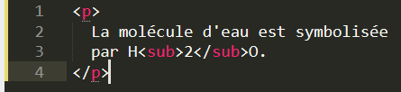
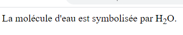

<sub>
| Description | Exemple | Résultat de l'exemple |
|---|---|---|
|
La balise <sub> est utilisé pour définir le texte de l'indice.L’indice apparaît en dessous de la ligne de base. Cette balise ne doit pas être utilisée pour la mise en forme CSS. |
 |  |